Study Notes — Weeks 11 to 16
Everything from the lecture slides, rewritten in plain English with the key figures. Every exam question links to one of these sections.
W11Basic Industrial Robot (3) — Inverse Kinematics
Forward vs inverse kinematics
Kinematics relates a robot's joint values to where its end effector (the tool at the tip) ends up.
Forward kinematics (FK)
Know the joint angles \(\theta_1 \dots \theta_6\) → find the pose \((X, Y, Z, R_x, R_y, R_z)\).
Inverse kinematics (IK)
Know the pose \((X, Y, Z, R_x, R_y, R_z)\) → find the joint angles \(\theta_1 \dots \theta_6\).
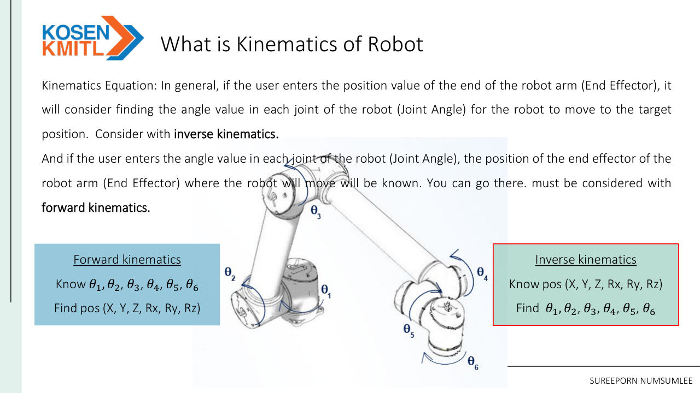
IK finds the joint variables that give a desired end-effector position and orientation — in the simple case, joint angles from given x and y.
- The solution is difficult to find and not unique (several joint sets reach the same point).
- Two analytical approaches: Geometric (triangles, law of cosines — used in class) and Algebraic.
2-link planar arm: finding θ₂ (law of cosines)
Link 1 has length \(a_1\) and joint angle \(\theta_1\) (from the x-axis). Link 2 has length \(a_2\) and angle \(\theta_2\) (relative to link 1). The target is \((x, y)\). Draw the line \(c\) from the base to the target, so \(c^2 = x^2 + y^2\).
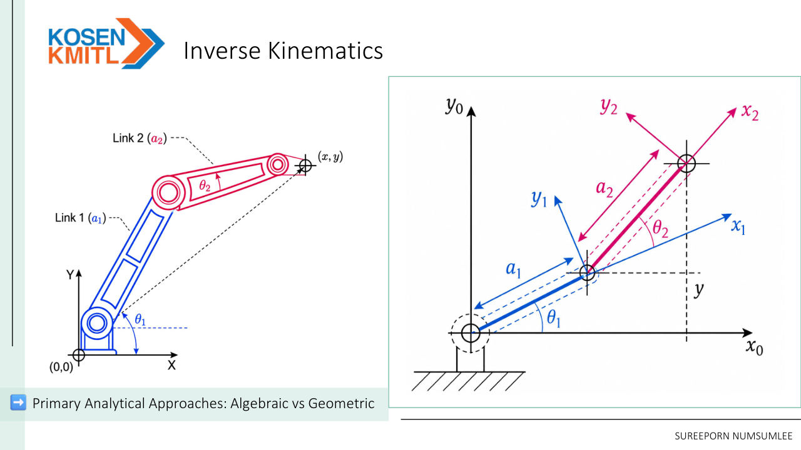
- Law of cosines on the triangle \(a_1, a_2, c\): \(c^2 = a_1^2 + a_2^2 - 2a_1a_2\cos\theta_c\)
- Supplementary angle: \(\theta_c\) and \(\theta_2\) lie on a straight line, so \(\theta_c + \theta_2 = \pi\) and \(\cos\theta_c = -\cos\theta_2\).
- Substitute: \(c^2 = a_1^2 + a_2^2 + 2a_1a_2\cos\theta_2\)
Then use Atan2 rather than \(\cos^{-1}\), so you keep both solutions and the correct quadrant:
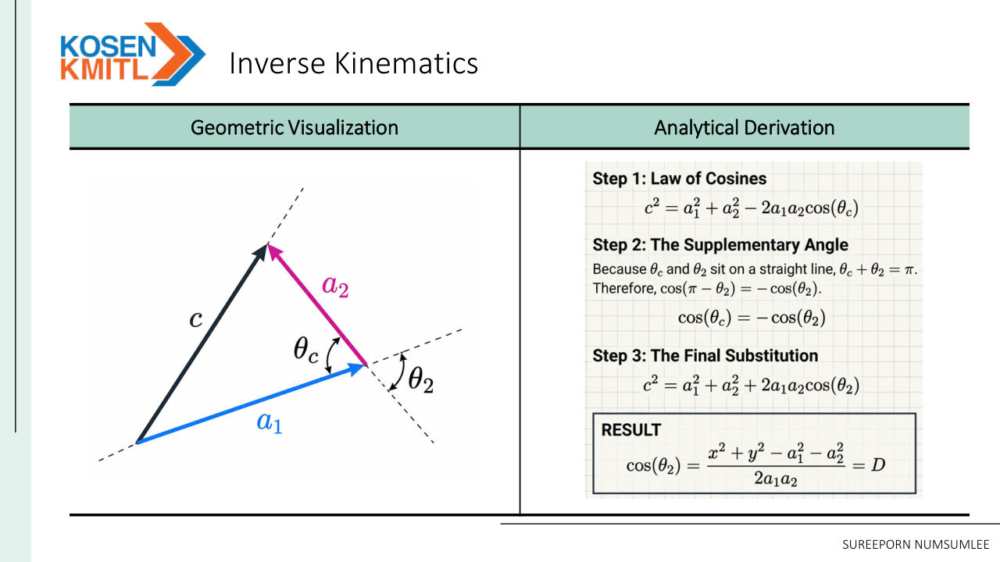
2-link planar arm: finding θ₁
- Angle of the line to the target: \(\omega = \operatorname{Atan2}(y, x)\)
- Angle between link 1 and that line (from link 2's geometry): \(\phi = \operatorname{Atan2}(a_2\sin\theta_2,\; a_1 + a_2\cos\theta_2)\)
- Combine: \(\theta_1 = \omega - \phi\)
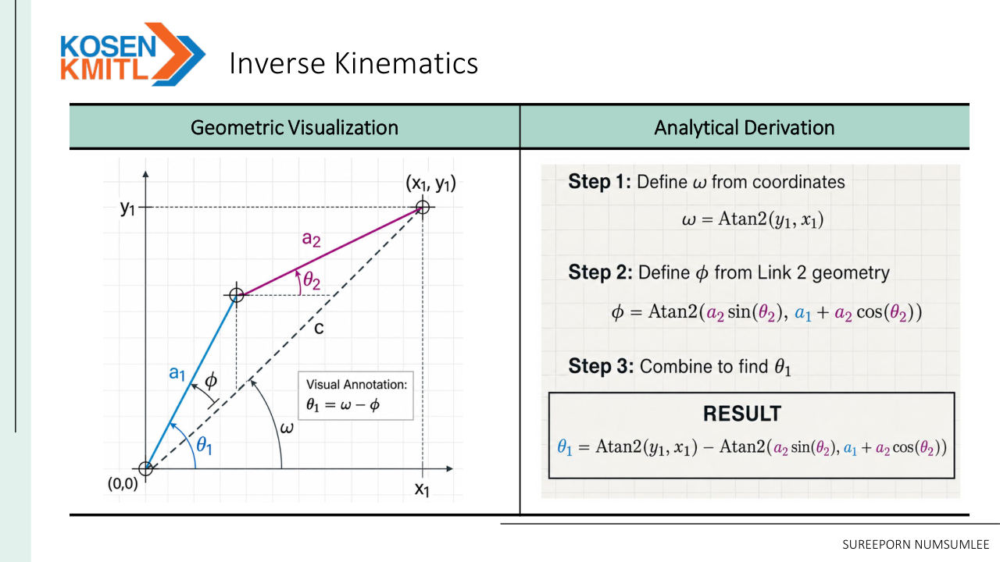
The multiplicity of solutions (arm up / arm down)
The \(\pm\) in \(\theta_2 = \operatorname{Atan2}(\pm\sqrt{1-D^2}, D)\) gives two configurations that reach the same point: the elbow bends one way or the other.
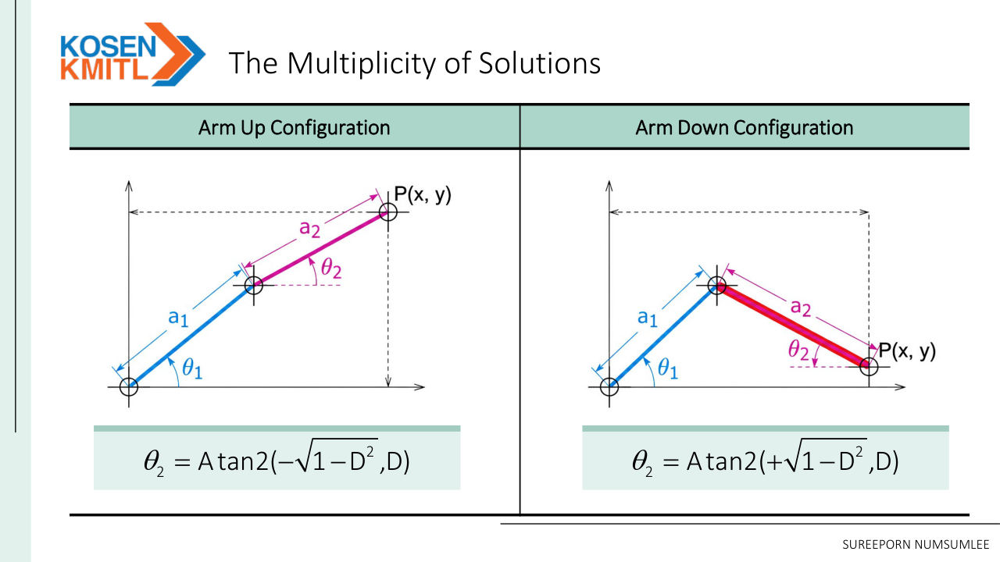
| Value of D | Meaning |
|---|---|
| \(|D| < 1\) | Two solutions (θ₂ = ±) |
| \(D = \pm 1\) | One solution — arm fully stretched (θ₂ = 0) or fully folded (θ₂ = 180°) |
| \(|D| > 1\) | No solution — target outside the workspace |
Why Atan2 instead of standard tan⁻¹?
\(\tan\theta = y/x\) loses quadrant information: \((+,+)\) in quadrant I and \((-,-)\) in quadrant III give the same positive ratio. \(\operatorname{Atan2}(y, x)\) looks at the signs of both arguments, so the robot identifies the correct physical quadrant of the target.
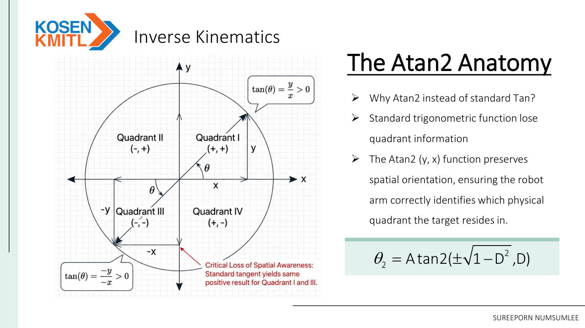
| Point (x, y) | tan⁻¹(y/x) | Atan2(y, x) |
|---|---|---|
| (3, 3) | 45° | 45° |
| (−3, 3) | −45° ✗ | 135° |
| (−3, −3) | 45° ✗ | −135° (= 225°) |
| (3, −3) | −45° | −45° |
Worked example (lecture Example 1)
\(a_1 = 3\), \(a_2 = 5\), target \((x, y) = (2.0,\ 7.5)\). Find all \(\theta_1, \theta_2\).
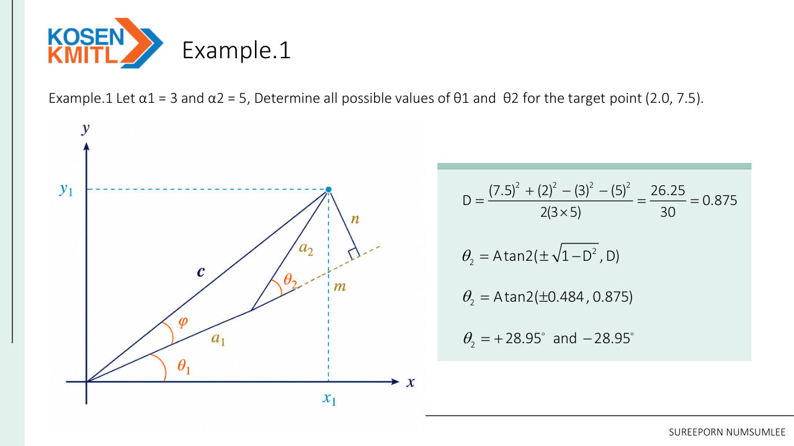
Now \(\theta_1\), with \(\operatorname{Atan2}(7.5, 2) = 75.07^\circ\) and \(\phi = \operatorname{Atan2}(5\sin\theta_2,\ 3 + 5\cos\theta_2) = \pm 18.17^\circ\):
| θ₂ | θ₁ = 75.07° − φ | Check (FK) |
|---|---|---|
| +28.96° | 56.90° | x = 2.00, y = 7.50 ✓ |
| −28.96° | 93.24° | x = 2.00, y = 7.50 ✓ |
Atan2(7.5, 2) as 14.93°, which is really Atan2(2, 7.5) (x and y swapped). That gives θ₁ = −3.24° and 33.10°, which reach the mirrored point (7.5, 2). With Atan2(y, x) = 75.07°, the correct answers for (2, 7.5) are 56.90° and 93.24°. D and θ₂ on the slides are correct.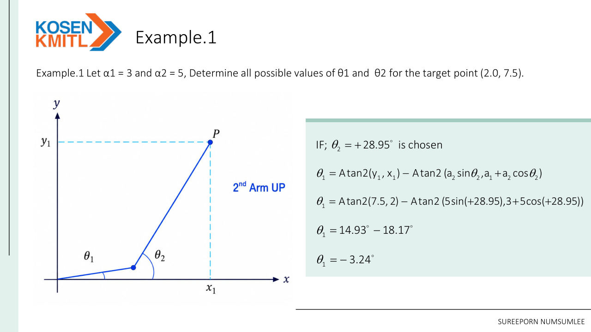
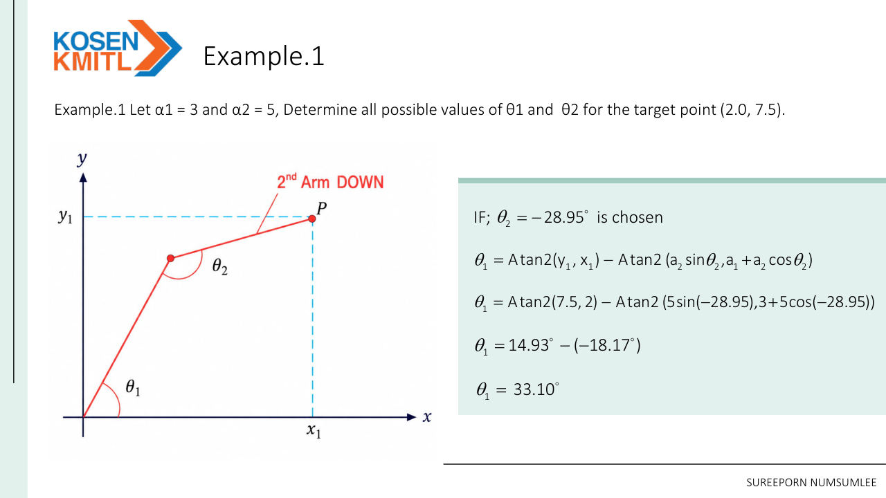
RRR configuration (no offset) — 2D projected into 3D
An RRR (Revolute-Revolute-Revolute) robot in 3D is mathematically identical to a 2-link planar robot, just rotating on a base axis. Swap the planar coordinates:
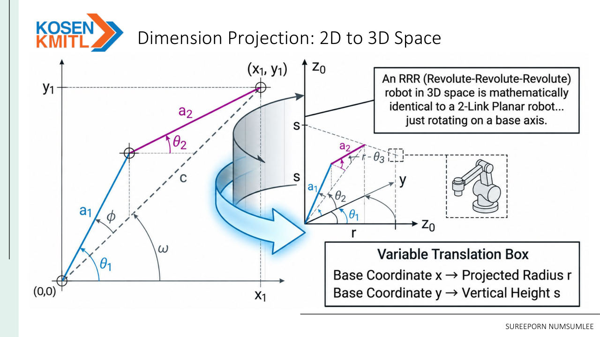
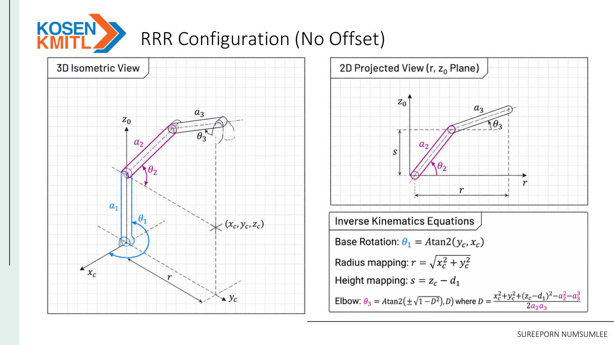
Another valid base solution is \(\theta_1 = \operatorname{Atan2}(y_c, x_c) + \pi\) (reaching back over the base).
Example: \(d_1 = 1\), \(a_2 = 4\), \(a_3 = 3\), target (3, 4, 2) → θ₁ = 53.13°, r = 5, s = 1, D = 0.0417, θ₃ = ±87.61°.
RRR with offset — the offset illusion
When the shoulder is offset sideways by \(d\), the arm plane no longer passes through the base axis. The same target can then be reached with the elbow bending to either side of the target line:
Left-arm configuration
Elbow bends left of the target line.
Right-arm configuration
Elbow bends right of the target line.
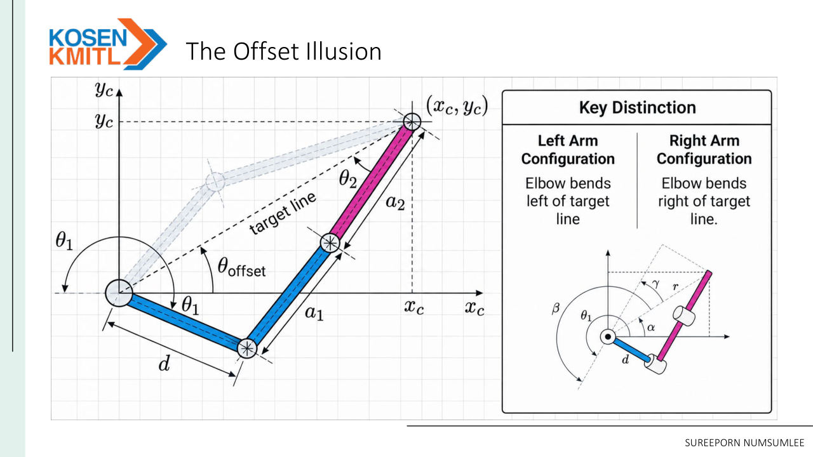
By Pythagoras, the usable in-plane radius shrinks to \(\sqrt{x_c^2 + y_c^2 - d^2}\). The θ₁ "modifier" formulas:
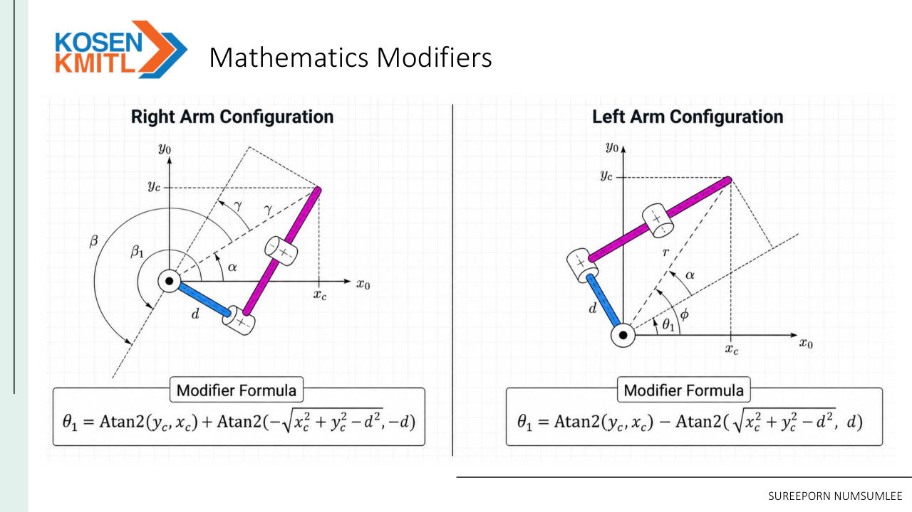
Right arm derivation: \(\theta_1 = \alpha + \beta\), with \(\alpha = \operatorname{Atan2}(y_c, x_c)\), \(\gamma = \operatorname{Atan2}(\sqrt{r^2 - d^2}, d)\) and \(\beta = \gamma + \pi\). Since \(\cos(\theta+\pi) = -\cos\theta\) and \(\sin(\theta+\pi) = -\sin\theta\), \(\beta = \operatorname{Atan2}(-\sqrt{r^2-d^2}, -d)\).
Left arm: \(\theta_1 = \phi - \alpha\), where \(\phi = \operatorname{Atan2}(y_c, x_c)\) and \(\alpha = \operatorname{Atan2}(\sqrt{r^2-d^2}, d)\).
For θ₂ and θ₃ use the RRR formulas, but with \(r^2 = x_c^2 + y_c^2 - d^2\):
RRP configuration (Revolute-Revolute-Prismatic)
Replacing the last rotating joint with an extending (prismatic) joint vastly simplifies IK.
| RRR | RRP | |
|---|---|---|
| Output required | Angle θ₃ | Linear distance d₃ |
| Complexity | High — law of cosines | Low — Pythagorean theorem |
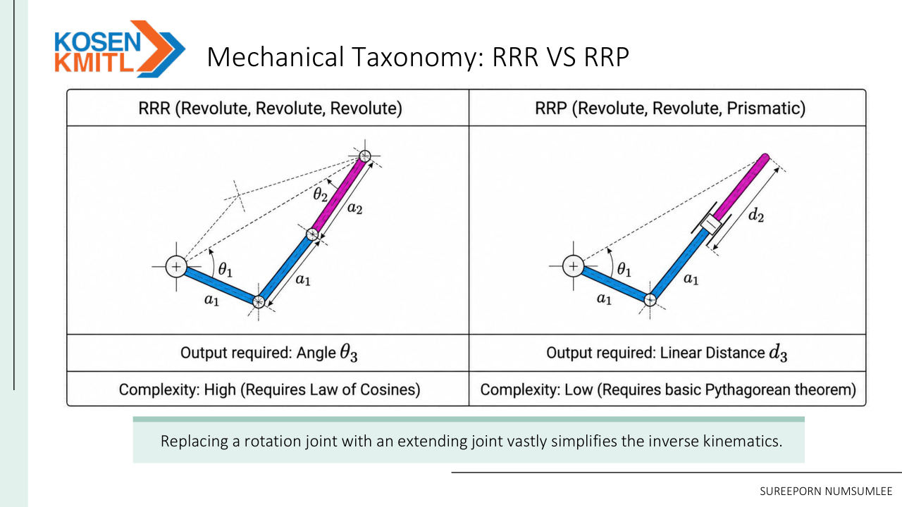
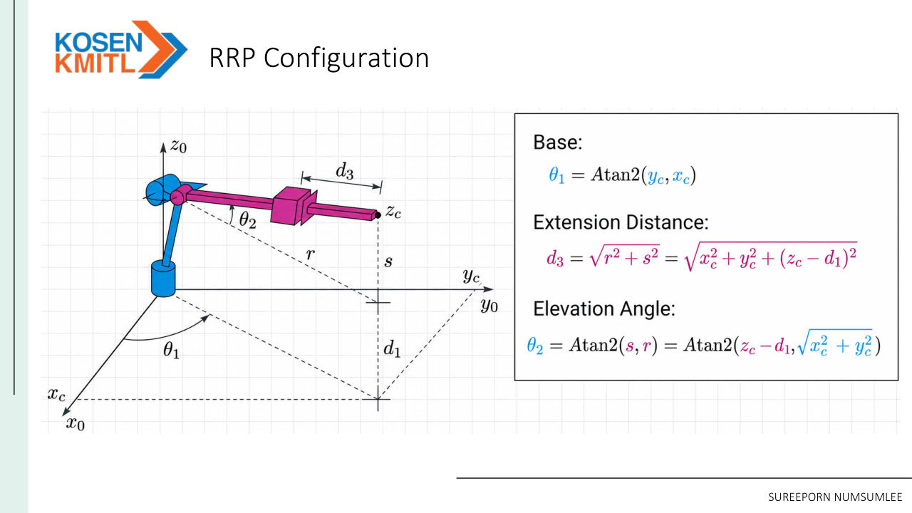
Example: \(d_1 = 2\), target (3, 4, 5) → θ₁ = 53.13°, r = 5, s = 3, d₃ = √34 ≈ 5.83, θ₂ = 30.96°. RRP has only one value of θ₂ and d₃ (the assignment hint says so too).
IK formula sheet
| Arm | Step | Formula |
|---|---|---|
| 2-link planar | D | \((x^2+y^2-a_1^2-a_2^2)/(2a_1a_2)\) |
| θ₂ | \(\operatorname{Atan2}(\pm\sqrt{1-D^2}, D)\) | |
| θ₁ | \(\operatorname{Atan2}(y,x) - \operatorname{Atan2}(a_2\sin\theta_2, a_1+a_2\cos\theta_2)\) | |
| RRR | θ₁, r, s | \(\operatorname{Atan2}(y_c,x_c)\), \(\sqrt{x_c^2+y_c^2}\), \(z_c-d_1\) |
| θ₃ | \(\operatorname{Atan2}(\pm\sqrt{1-D^2}, D)\), \(D = (r^2+s^2-a_2^2-a_3^2)/(2a_2a_3)\) | |
| θ₂ | \(\operatorname{Atan2}(s, r) - \operatorname{Atan2}(a_3\sin\theta_3, a_2+a_3\cos\theta_3)\) | |
| RRR + offset d | θ₁ right | \(\operatorname{Atan2}(y_c,x_c) + \operatorname{Atan2}(-\sqrt{x_c^2+y_c^2-d^2}, -d)\) |
| θ₁ left | \(\operatorname{Atan2}(y_c,x_c) - \operatorname{Atan2}(\sqrt{x_c^2+y_c^2-d^2}, d)\) | |
| RRP | d₃ | \(\sqrt{x_c^2+y_c^2+(z_c-d_1)^2}\) |
| θ₂ | \(\operatorname{Atan2}(z_c-d_1, \sqrt{x_c^2+y_c^2})\) |
W13Sensor and Smart Device
What is a sensor?
- Detects phenomena such as temperature, light, pressure and chemical substances.
- Used in industrial automation, environmental monitoring, consumer electronics and medical devices.
- Gives systems the data to monitor, analyze and interact with their surroundings.
- Types: electronic, mechanical, optical, chemical, biological and thermal. Each detects specific properties and converts them into measurable signals.
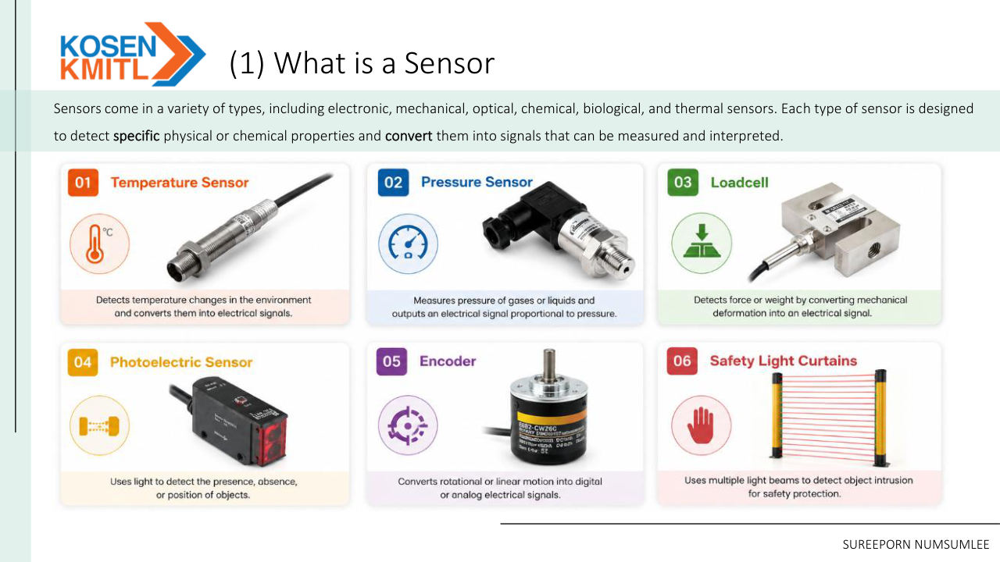
| Sensor | What it does |
|---|---|
| Temperature sensor | Detects temperature changes → electrical signal |
| Pressure sensor | Gas/liquid pressure → proportional electrical signal |
| Load cell | Force or weight → signal, via mechanical deformation |
| Photoelectric sensor | Uses light to detect presence, absence or position |
| Encoder | Rotational or linear motion → digital or analog signal |
| Safety light curtain | Multiple light beams detect intrusion, for safety |
How a sensor works — 4 stages
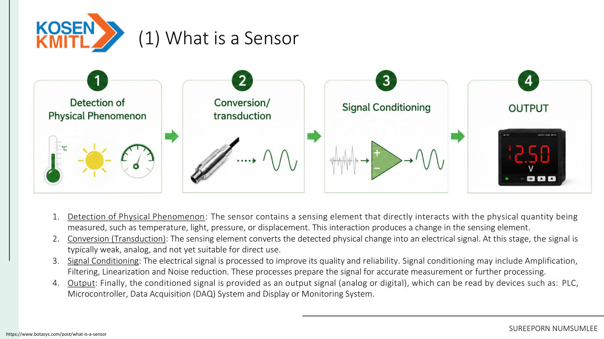
- Detection of physical phenomenon — a sensing element interacts directly with the quantity (temperature, light, pressure, displacement) and changes.
- Conversion (transduction) — the change becomes an electrical signal. At this stage it is weak, analog and not yet usable.
- Signal conditioning — improve quality and reliability: amplification, filtering, linearization, noise reduction.
- Output — an analog or digital signal read by a PLC, microcontroller, DAQ system, or display.
Proximity & fiber-optic sensors
| Sensor | Detects | Key features | Applications |
|---|---|---|---|
| Capacitive proximity | Metal and non-metal; solid, liquid, granular | Range depends on the target's dielectric constant | Level detection, presence sensing, packaging inspection, bulk material level |
| Inductive proximity | Metal only | Non-contact, highly reliable, resists dust, oil, vibration | Position sensing, transport monitoring, pulse generation, RPM, rotation, feed/reject, idle running |
| Fiber-optic photoelectric | Tiny objects | Transmitter/receiver linked by fiber cables; fits tight spaces, high-temperature and harsh environments | Precision assembly, electronic components, pneumatic pick-and-place, packaging machines |
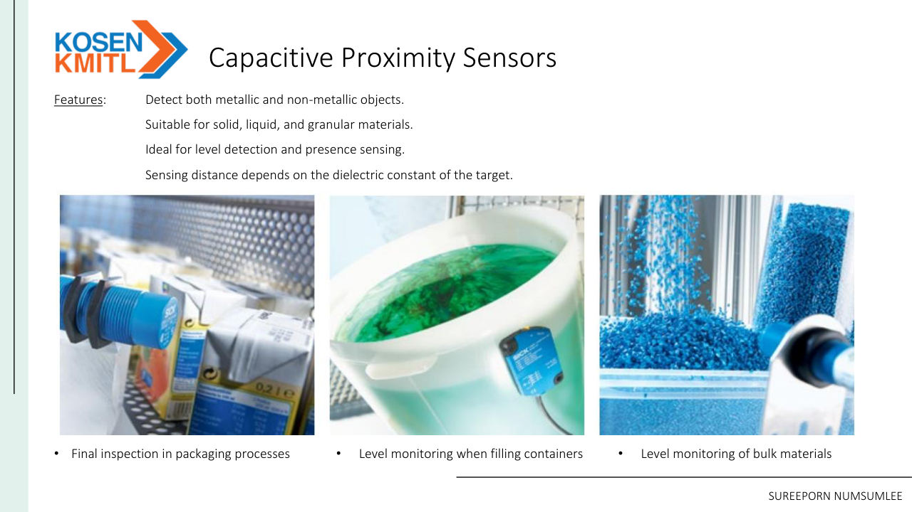
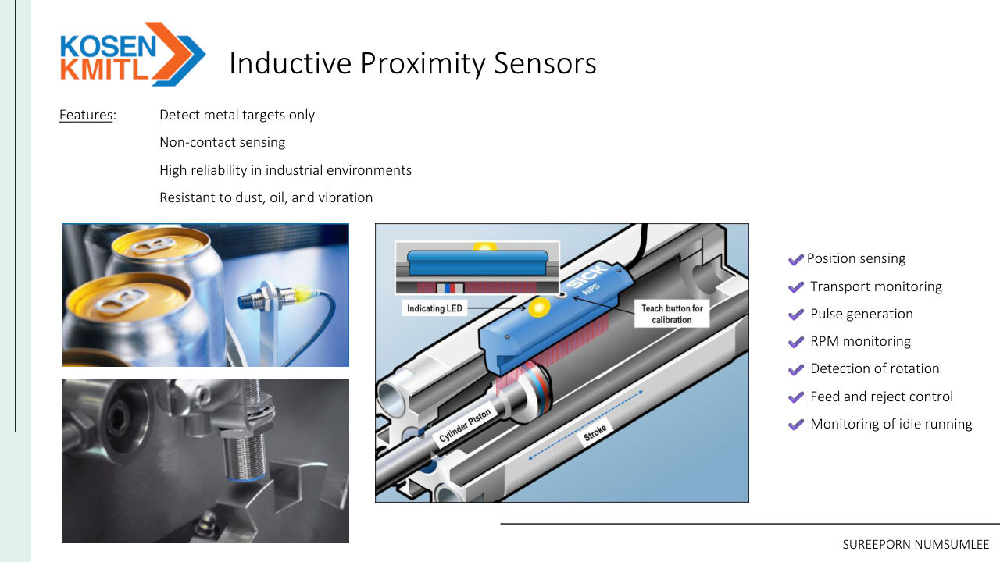
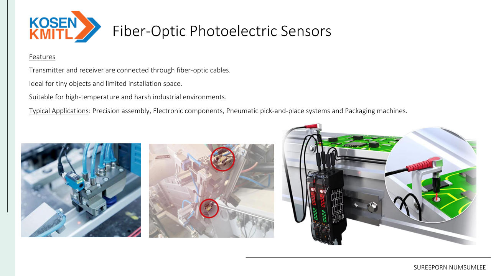
Smart sensors
It takes input from the environment and uses built-in compute to perform predefined functions, processing data before passing it on. The result is more accurate, automated data with less noise. Uses include smart grids, reconnaissance, exploration and science.
| Function | Description |
|---|---|
| Measurement | Measures physical quantities (detect → electrical signal) |
| Configuration | Setup and calibration; detects position or installation errors |
| Verification | Self-diagnostics — nonstop supervision of sensor behavior |
| Communication | Exchanges data with the main microcontroller or external devices |
Benefits: high accuracy, real-time monitoring, self-diagnostics, digital communication, easy Industry 4.0 integration.
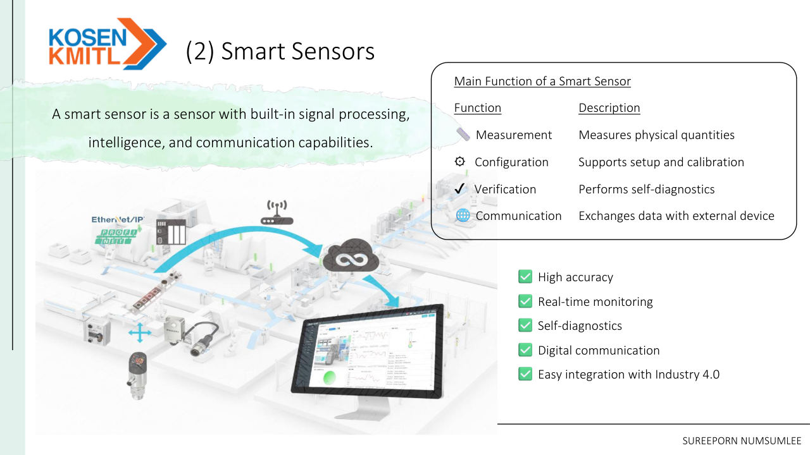
Applications: motion sensors (occupancy → lights on/off, saves energy), light sensors (daylight harvesting, human-centric lighting), thermal sensors (HVAC, equipment overheating), smoke sensors (early fire alarm, more evacuation time).
Smart sensor block diagram
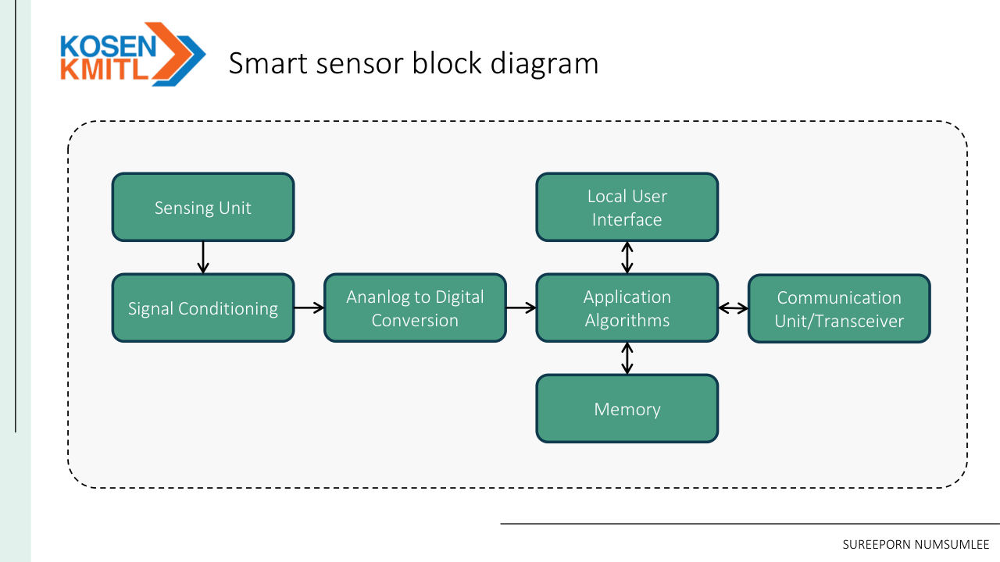
- Sensing unit — detects changes in physical parameters and produces equivalent electrical signals.
- Signal conditioning unit — shapes the signal for the next stage without losing data.
- ADC — converts analog to digital and sends it to the microprocessor.
- Application algorithm — processes data with the loaded program and generates output signals.
- Memory — stores received and processed data.
- Local user interface (LUI) — panel-mounted device that lets building operators monitor and control equipment.
- Communication unit / transceiver — sends outputs to the main station and receives commands from it.
Traditional vs smart sensor
| Traditional (e.g. inductive sensor) | Smart (e.g. IO-Link smart sensor) |
|---|---|
| Detect | Detect + process |
| Analog | Digital |
| No diagnostics | Self-diagnostics |
| PLC does the processing | MCU inside does the processing |
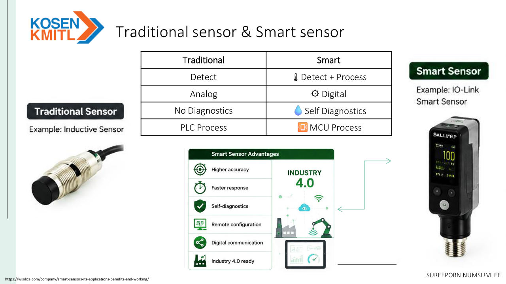
The impact of sensors on industrial automation
Sensors provide real-time data, measure key parameters (temperature, pressure, flow rate, vibration), and enable automatic control and optimization.
- Real-time monitoring & process control
- Fault detection & predictive maintenance — catch abnormal conditions before failure
- Quality improvement — fewer defects
- Energy efficiency — lower operating cost
- Safety enhancement — detect hazards, fewer accidents
Benefits of integration: improved efficiency (less downtime), increased productivity, enhanced quality, reduced costs (energy, waste, maintenance), improved safety.
| Sensor type | Measures | Typical applications |
|---|---|---|
| Temperature | Temperature | HVAC, furnaces, boilers, process control |
| Pressure | Pressure | Hydraulic & pneumatic systems, tanks, pipelines |
| Flow | Liquid/gas flow rate | Water treatment, chemical processing, food industry |
| Vibration | Machine vibration | Predictive maintenance, motor & bearing monitoring |
| Proximity | Object presence | Conveyors, position detection, part counting |
Uses in manufacturing: predictive maintenance, process control, quality control, inventory management.
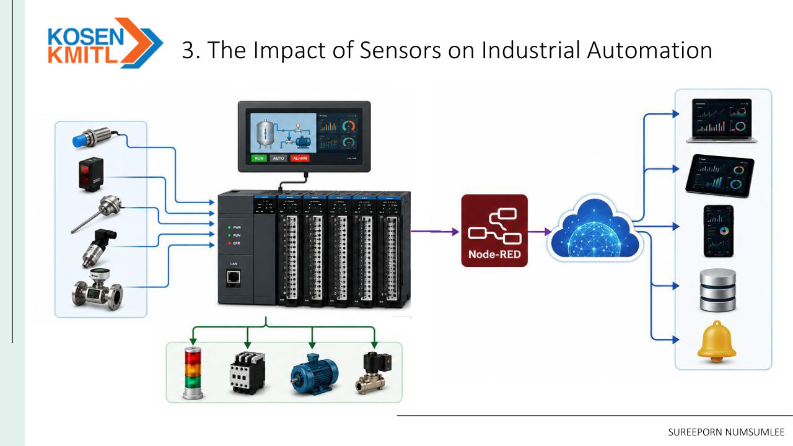
W14Smart Device and Interface System — Node-RED
What is an interface?
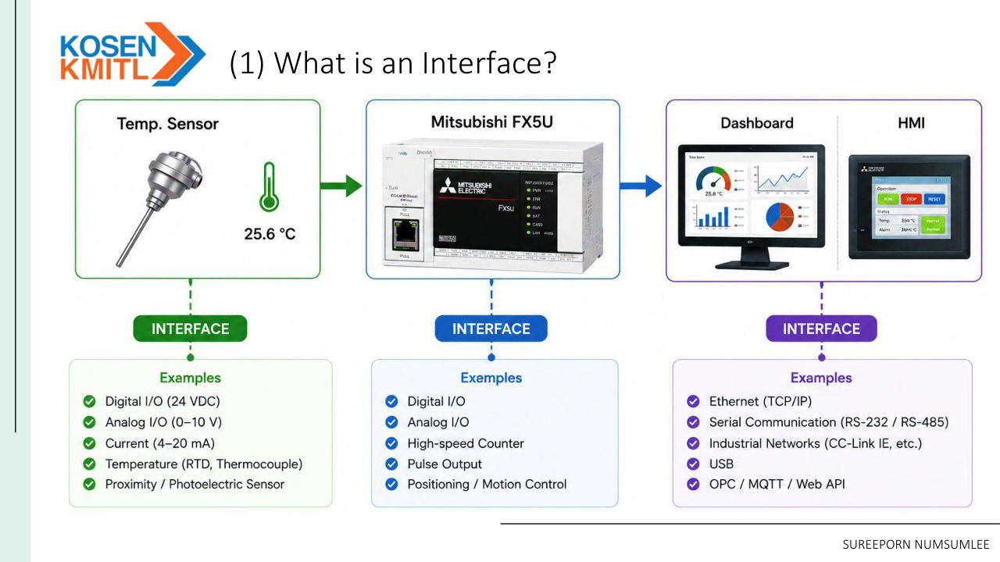
| Link | Interface examples |
|---|---|
| Sensor → PLC | Digital I/O (24 VDC), analog I/O (0–10 V), current (4–20 mA), temperature (RTD, thermocouple), proximity/photoelectric |
| PLC (FX5U) itself | Digital I/O, analog I/O, high-speed counter, pulse output, positioning/motion control |
| PLC → dashboard / HMI | Ethernet (TCP/IP), serial (RS-232 / RS-485), industrial networks (CC-Link IE), USB, OPC / MQTT / Web API |
Types of interface — and why we need one
1 · Hardware interface — connects devices
The physical and electrical connection for transferring signals or data.
- External ports: USB, HDMI, Ethernet
- Internal slots: PCIe (graphics card, memory)
- Chip protocols: UART, SPI
2 · Software interface — connects applications & data
Lets different software or systems exchange and process data.
- UI: GUI (icons, windows) and CLI (typed text)
- API: software systems talk to each other
- Programming/object interface: a code contract — what a component must do, not how
Question from the slide: "If we connect a PLC and a computer using an Ethernet cable, can they communicate immediately?" — No. The cable is only the hardware interface. Both sides also need matching network settings and a common protocol (see interface vs protocol).
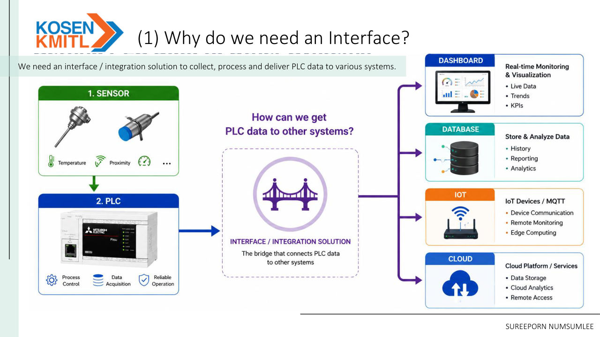
Why? We need an interface / integration solution to collect, process and deliver PLC data to other systems: dashboards (live data, trends, KPIs), databases (history, reporting, analytics), IoT/MQTT (device communication, edge computing) and cloud (storage, analytics, remote access).
What is Node-RED?
- Goal: let anyone build applications that collect, transform and visualize data. It is low-code, so it suits users of any background.
- Built on Node.js (event-driven, non-blocking) → runs at the edge on low-cost hardware (Raspberry Pi) and in the cloud.
- Installation (W13): install Node.js → run the Node-RED install command → verify the installation → run Node-RED.
How does Node-RED work? Input → Process → Output:
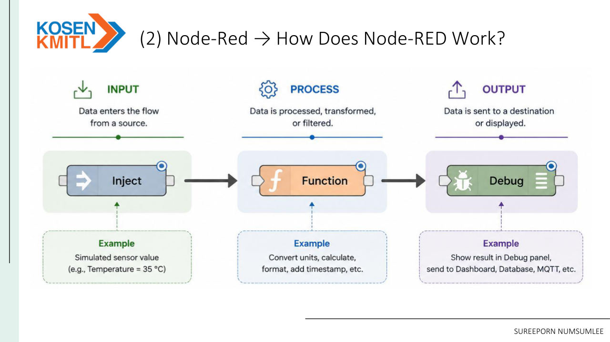
| Stage | Node | Example |
|---|---|---|
| Input — data enters the flow | Inject | Simulated sensor value (temperature = 35 °C) |
| Process — transform / filter | Function | Convert units, calculate, format, add timestamp |
| Output — send or display | Debug | Debug panel, dashboard, database, MQTT |
Your first flow: Inject → Debug
- Open the editor:
http://localhost:1880(from another computer:http://<ip-address>:1880). - Add an Inject node — injects messages by clicking its button or on a time interval.
- Add a Debug node — shows messages in the Debug sidebar (by default only
msg.payload; it can show the whole message). - Wire them — drag from the output port of one to the input port of the other.
- Deploy — nodes only exist in the editor until you click Deploy.
- Inject — click the Inject button. Numbers appear: by default the payload is a timestamp in milliseconds.
Editor layout — 4 components
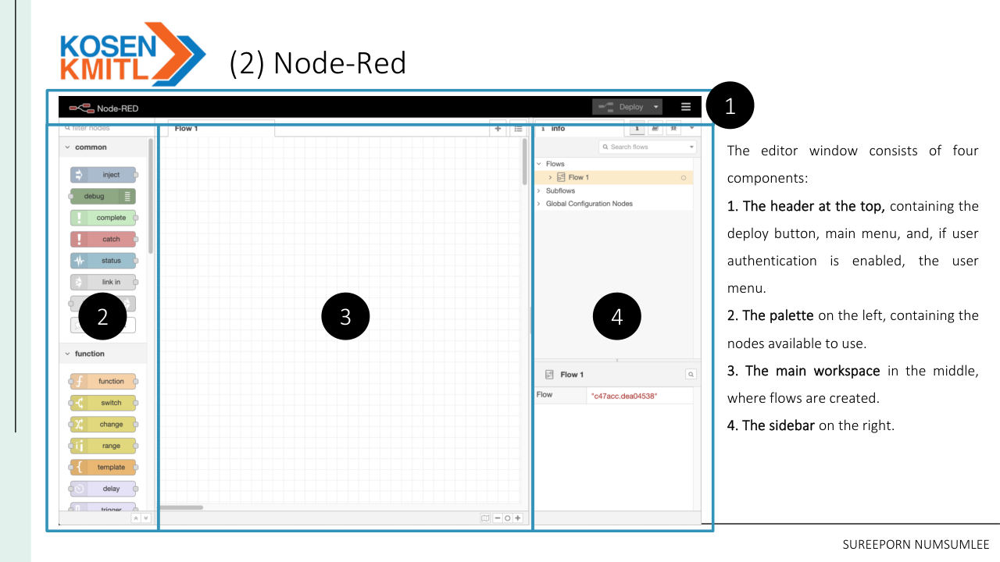
- Header (top) — Deploy button, main menu, user menu (if authentication is enabled).
- Palette (left) — the nodes available to use, in categories (inputs, outputs, functions first; subflows at the top). Can be hidden.
- Workspace (middle) — build flows by dragging nodes and wiring them. It has one tab per flow/subflow. The footer has zoom in/out/reset and the view navigator (scaled-down map for finding "lost" nodes). Customize it via User Settings → View.
- Sidebar (right) — info, debug, config nodes, context.
Flows, nodes & wires
Flow = a tab in the workspace, the main way to organize nodes. (Informally, "flow" also means one set of connected nodes, so one tab can contain several flows.)
- Each flow has a name and description (shown in the Info sidebar); all nodes in a flow share flow-scoped context.
- Add a flow: the + button, or double-click free space in the tab bar. Reorder by dragging tabs.
- Edit flow properties: double-click its tab → Properties (name, Markdown description) and Environment Variables.
- Disabled flow: none of its nodes are created on deploy.
Adding nodes: drag from the palette, use the Quick-Add dialog (Ctrl/Cmd + click the workspace), or import from the library/clipboard.
- A node has at most one input port and many output ports. Ports can have labels (e.g. a Switch node shows the matching rule).
- Status under a node shows its runtime state (e.g. MQTT connected).
- Blue circle = undeployed changes · red triangle = configuration errors.
- Inject and Debug are the only core nodes with buttons.
- Edit a node: double-click or press Enter (with several selected, the first is edited). Tabs: Properties, Description, Appearance.
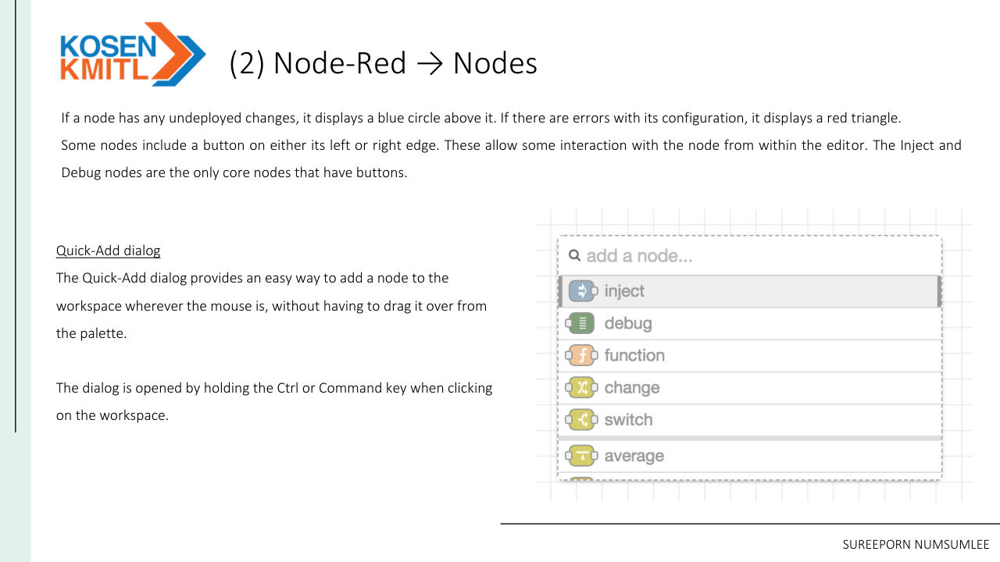
Wires: press on a port, drag to the destination, release. Or hold Ctrl/Cmd, click the port, then click the destination; keep holding to chain more wires quickly.
Arranging: the Arrange menu aligns and distributes nodes, e.g. align left Alt-a l, right Alt-a r, top Alt-a t, bottom Alt-a b, middle Alt-a m, center Alt-a c, distribute horizontally Alt-a h, vertically Alt-a v.
Groups & subflows
Group
Nodes joined so they move/copy as one object. Can have a border, background color and label. Create: select nodes → Groups → Group selection. Edit: double-click (Properties, Environment Variables, Description).
Subflow
A collection of nodes collapsed into a single node. It reduces visual complexity and packages reusable logic. Once created, it appears in the palette.
- Create empty: Subflow → Create subflow. Convert: Subflow → Selection to Subflow.
- Conversion is only possible if the wires coming into the selection connect to one node — a subflow node has at most one input.
- Edit it by double-clicking it in the palette, or with "Edit flow template" in an instance. Subflow tabs can be closed (unlike flow tabs).
- Inputs/outputs are grey square nodes: at most one input, as many outputs as needed. There is an optional status output (msg.payload = string or Status Object).
- Properties dialog tabs: Properties (per-instance env vars), Module Properties (metadata), Description, Appearance.
Import / export & palette manager
Flows are shared as JSON.
Import
- paste flow JSON
- upload a JSON file
- browse the local library
- browse example flows of installed nodes
Into the current flow or a new flow.
Export
- copy to clipboard
- download a JSON file
- save to the local library
Selected nodes, current flow, or all flows. Compact (one line) or formatted (indented).
Palette Manager (User Settings → Palette) installs new nodes:
- Nodes tab — installed modules with version and node types; remove, disable or upgrade. A module in use cannot be removed or disabled.
- Install tab — search modules (shows last update and docs link), then click install. This is how you add
node-red-contrib-mcprotocolandnode-red-contrib-modbus.
Sidebar panels
| Panel | Purpose |
|---|---|
| Information | Outline of all flows and nodes (searchable) plus details of the selection. Hover buttons: reveal in workspace, trigger node button, enable/disable. |
| Debug | Messages passed to Debug nodes plus some runtime logs. Filter: all nodes / selected nodes / current flow. |
| Configuration nodes | All config nodes by scope, with a use count. Unused ones have a dotted outline ("unused" filter). Double-click to edit. |
| Context data | View the contents of context. |
Assignment: temperature monitoring & alarm
| Condition | Status |
|---|---|
| T < 40 °C | Normal |
| 40 °C ≤ T < 60 °C | Warning |
| T ≥ 60 °C | Overheat — message must say "MOTOR OVERHEAT" |
Give nodes meaningful names, test at least three temperatures, and submit a flow screenshot, result screenshots (NORMAL/WARNING/OVERHEAT) and the exported .json.
W15Node-RED with Mitsubishi PLC FX5U
Why connect a PLC to Node-RED?
| Reason | What it gives you |
|---|---|
| Real-time monitoring | Machine status and process data in real time, from anywhere |
| Web-based dashboard | Intuitive dashboards in a web browser |
| Data processing | Filter, calculate and transform PLC data with flows |
| Data logging | Store data in files, databases or the cloud for history and analysis |
| IoT / cloud integration | Connect to cloud platforms and IoT services |
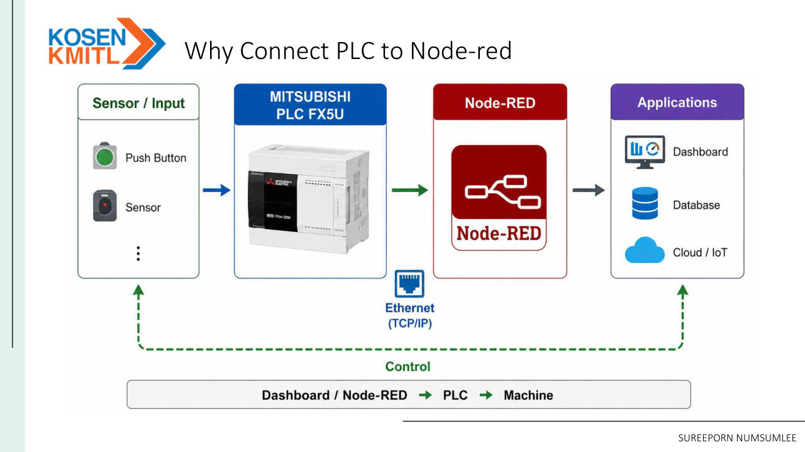
FX5U communication options
| Protocol | Key points | Best for |
|---|---|---|
| MC Protocol / SLMP ★ Recommended | Mitsubishi native, high speed, access to full device memory, advanced functions | HMI, SCADA, engineering tools |
| Modbus TCP | Open standard, widely used, easy integration, multi-vendor | Cloud, Node-RED, third-party systems |
| OPC UA (via OPC server / gateway) | Platform independent, secure, scalable | MES, ERP, IT systems |
| MQTT (via gateway / application) | Lightweight publish/subscribe, real-time, cloud-friendly | IoT devices, cloud, remote monitoring |
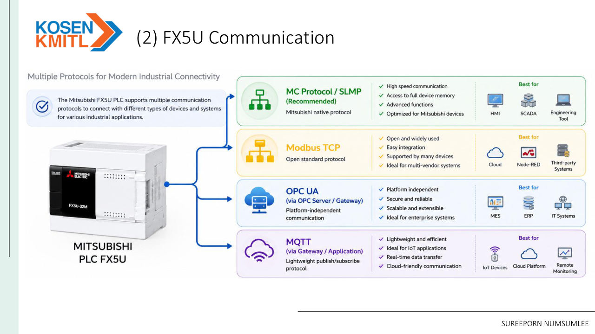
FX5U setting for SLMP (GX Works3)
- Navigation → Parameter → FX5UCPU → Module Parameter → Ethernet Port.
- Basic Settings → Own Node Settings: IP address
192.168.3.36, subnet mask255.255.255.0. (Communication data code: Binary.) - External Device Configuration → <Detailed Setting> opens the Ethernet Configuration window.
- From Module List → Ethernet Device (General), drag in an SLMP Connection Module. Set protocol TCP and port 9000.
- Click Close with Reflecting the Setting, then Check and Apply. Write the parameters to the PLC.
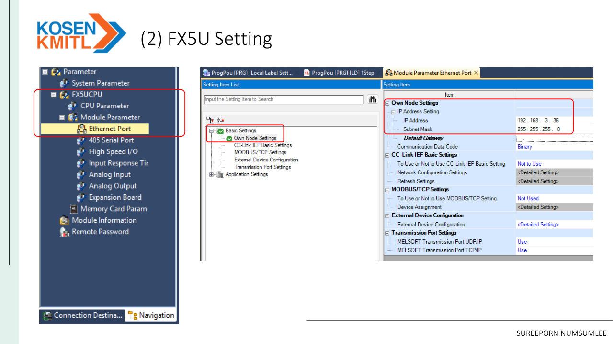
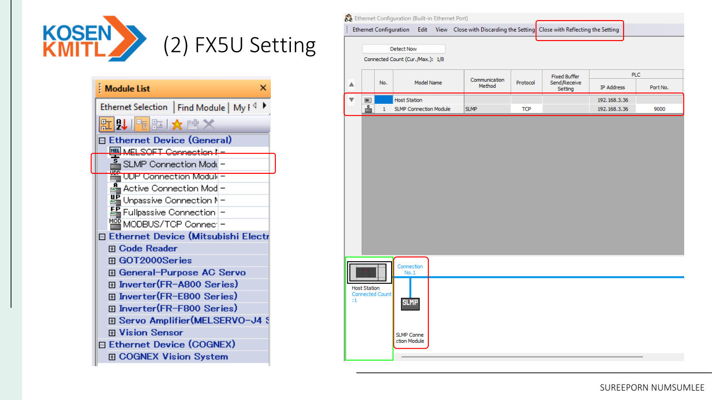
Node-RED: MC protocol nodes
Install node-red-contrib-mcprotocol (v1.2.1, 3 nodes). The MITSUBISHI palette category then shows MC Read, MC Write, Ind MC Read and Ind MC Write.
- MC Write node: Connection (192.168.3.36:9000), Address (e.g.
M100), Data (msg.payload), Errors (Throw). - MC Protocol Connection: Host
192.168.3.36, Port9000, frame 3E, protocol TCP, PLC type Q, PC No 0xff, timeout 1000 ms.
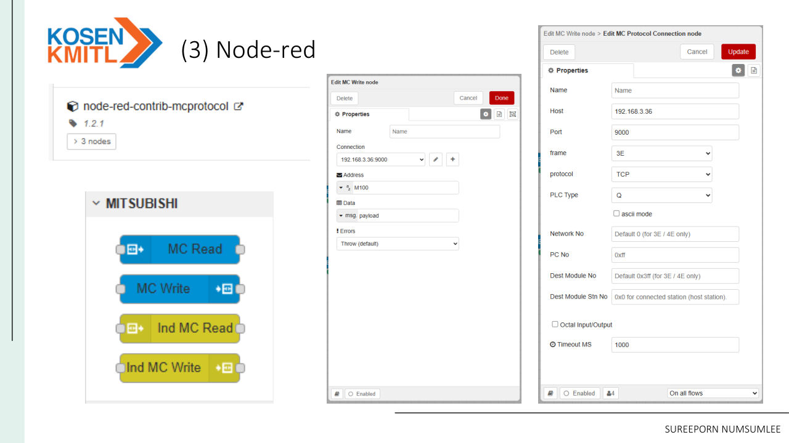
Assignment: PLC monitoring & control with FX5U
| Device | Address | Description |
|---|---|---|
| START push button | X0 | Start the system |
| STOP push button | X1 | Stop the system |
| Photoelectric sensor | X2 | Detect a workpiece |
| Motor | Y0 | Conveyor motor |
| Green lamp | Y1 | System running |
| Red lamp | Y2 | Alarm |
| System run status | M0 | Internal running status |
| Workpiece count | D0 | Total detected workpieces |
X = input · Y = output · M = internal relay (bit) · D = data register (word).
- Task 1 (PLC): START X0 → Y0 motor + Y1 green ON, M0 = ON. Each X2 detection → D0 + 1. STOP X1 → Y0, Y1, M0 OFF.
- Task 2: Node-RED reads M0, Y0, X2 and D0 in real time.
- Task 3 (dashboard): system status (RUNNING/STOPPED), motor status, sensor status, production counter.
- Bonus: if D0 ≥ 20, Node-RED shows "PRODUCTION TARGET REACHED", activates a dashboard alarm and writes M20. The PLC turns ON red lamp Y2.
W16Node-RED with FX5U — Modbus TCP
Industrial protocols & the automation pyramid
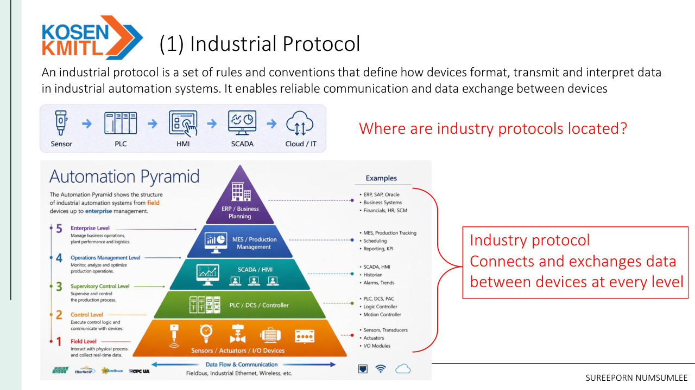
| Level | Name | Examples |
|---|---|---|
| 5 | Enterprise — business operations, logistics | ERP, SAP, Oracle, finance, HR, SCM |
| 4 | Operations management — monitor & optimize production | MES, production tracking, scheduling, KPI |
| 3 | Supervisory control — supervise the process | SCADA, HMI, historian, alarms, trends |
| 2 | Control — execute control logic | PLC, DCS, PAC, motion controller |
| 1 | Field — interact with the physical process | Sensors, transducers, actuators, I/O modules |
Benefits: Interoperability (different vendors communicate) · Reliability & security (stable, data integrity) · Efficiency (less engineering and maintenance cost) · Scalability (expand to IT/cloud).
Interface vs protocol
Devices need both a physical/logical connection (interface) and a common language (protocol).
Interface — how devices are connected
- Physical or logical connection
- Electrical signals, connectors, cables, network media
- Examples: Ethernet (RJ45), serial RS-232 / RS-485, USB, Wi-Fi
- Different interfaces can use the same protocol
Protocol — how data is communicated
- Rules for how data is formatted, transmitted and interpreted
- The "language" devices use to understand each other
- Examples: Modbus, PROFINET, EtherNet/IP, OPC UA, MQTT
- Different protocols can run over the same interface
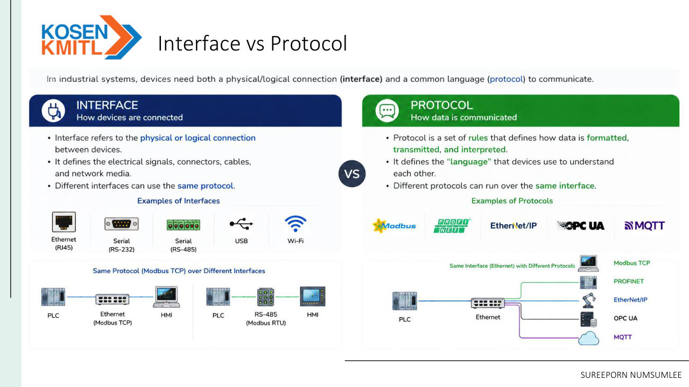
Modbus: client-server, request-response
Modbus is a widely used industrial protocol for data exchange between PLCs, HMIs, sensors, inverters, robots, PCs and Node-RED.
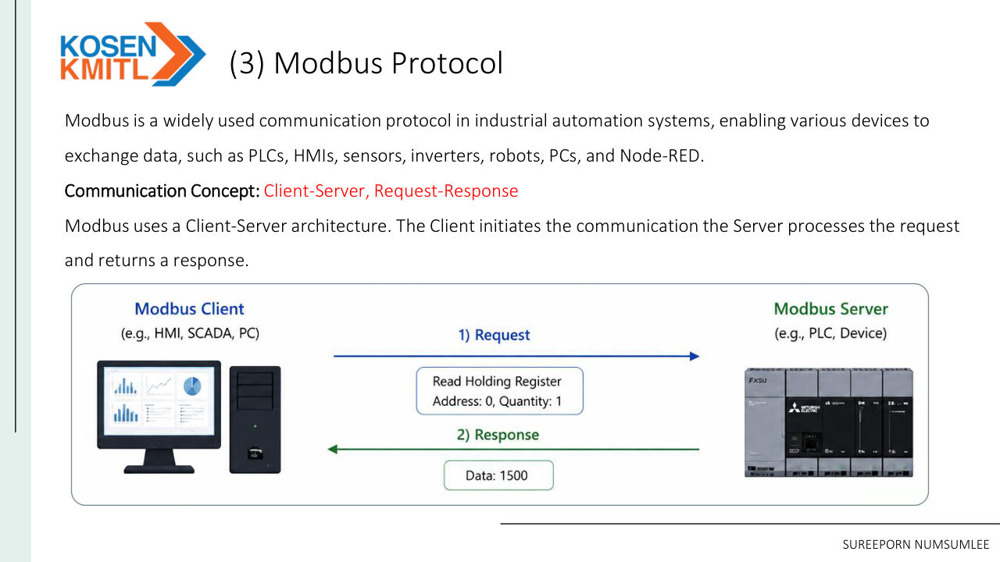
- The client (HMI, SCADA, PC, Node-RED) sends a request to read/write data.
- The server (PLC, device) processes it and returns a response.
- Only the client can start communication.
- Example: request "Read Holding Register, address 0, quantity 1" → response "Data: 1500".
Function codes & data types
| Data type | Size | Access | Read FC | Write FC |
|---|---|---|---|---|
| Coil | 1 bit | R/W | 01 | 05 (single), 0FH=15 (multiple) |
| Discrete input | 1 bit | Read-only | 02 | — |
| Input register | 16 bit | Read-only | 04 | — |
| Holding register | 16 bit | R/W | 03 | 06 (single), 10H=16 (multiple) |
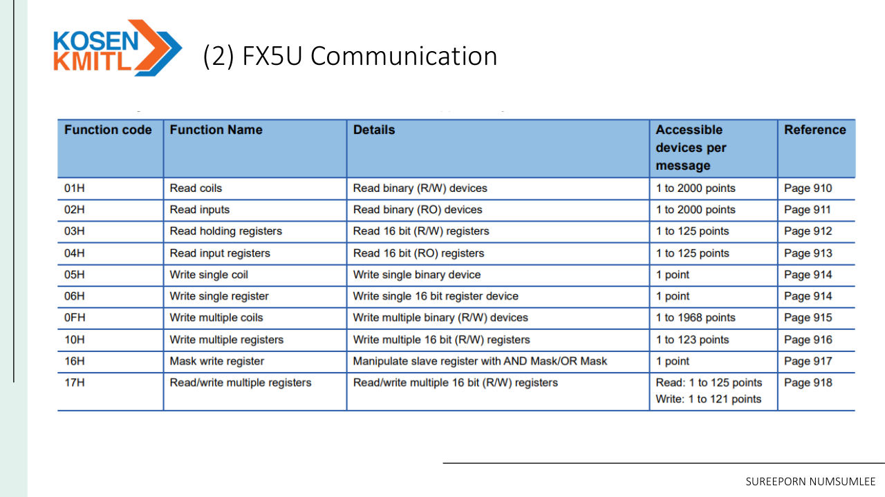
| FC | Name | Points / message |
|---|---|---|
| 01H | Read coils | 1–2000 |
| 02H | Read inputs | 1–2000 |
| 03H | Read holding registers | 1–125 |
| 04H | Read input registers | 1–125 |
| 05H | Write single coil | 1 |
| 06H | Write single register | 1 |
| 0FH | Write multiple coils | 1–1968 |
| 10H | Write multiple registers | 1–123 |
| 16H | Mask write register (AND/OR mask) | 1 |
| 17H | Read/write multiple registers | R 1–125 · W 1–121 |
FX5U setting for Modbus TCP
- Module Parameter → Ethernet Port → Own Node Settings: IP
192.168.3.30, mask255.255.255.0. - External Device Configuration: add a MODBUS/TCP Connection Module, protocol TCP, port 502 (allowed 1–5548 and 5570–65534, default 502).
- MODBUS/TCP Settings → To Use or Not to Use = Used, then open Device Assignment.
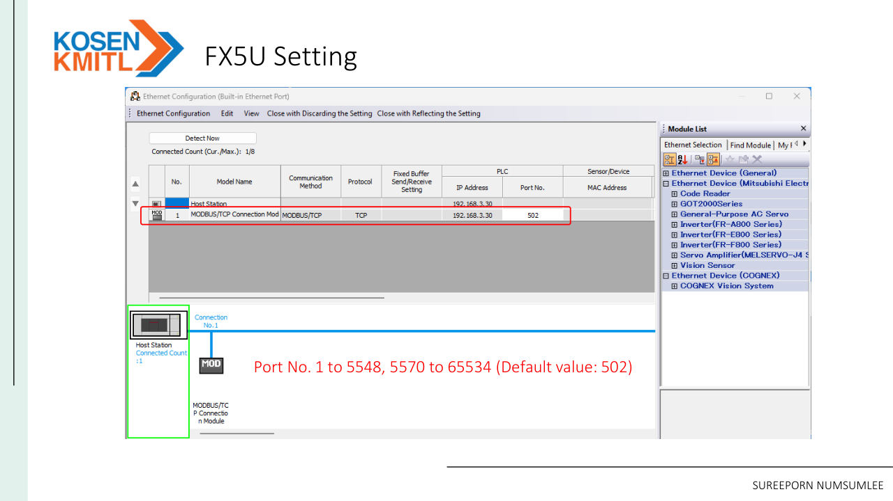
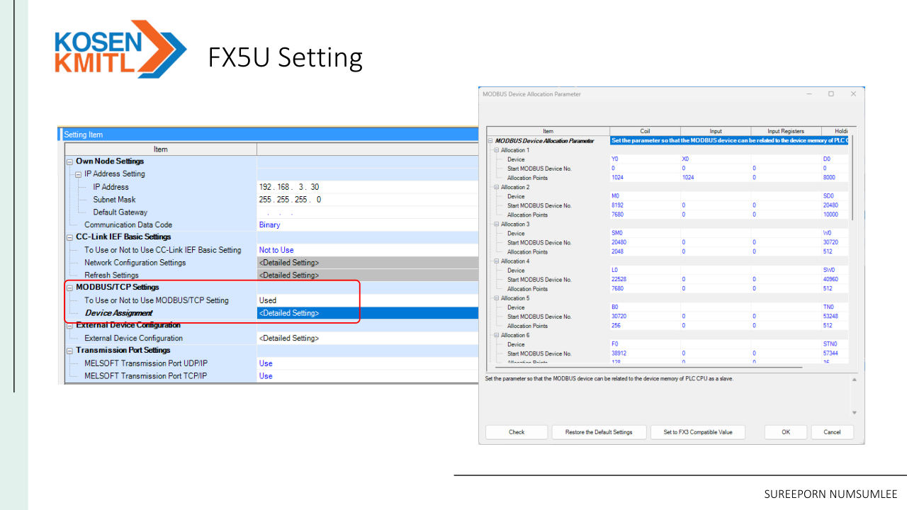
Default device assignment (Modbus address → PLC device):
| Modbus type | Device | Start address | Points |
|---|---|---|---|
| Coil | Y0 | 0 | 1024 |
| M0 | 8192 | 7680 | |
| SM0 | 20480 | 2048 | |
| L0 | 22528 | 7680 | |
| B0 | 30720 | 256 | |
| F0 | 38912 | 128 | |
| Input | X0 | 0 | 1024 |
| Holding register | D0 | 0 | 8000 |
| SD0 | 20480 | 10000 | |
| W0 | 30720 | 512 | |
| SW0 | 40960 | 512 | |
| TN0 | 53248 | 512 | |
| STN0 | 57344 | 16 |
Node-RED: Modbus nodes
Install node-red-contrib-modbus (v5.60.2, 14 nodes): Modbus-Response, Modbus-Read, Modbus-Getter, Modbus-Flex-Getter, Modbus-Write, Modbus-Flex-Write, Modbus-Server…
- modbus-client config node: name
FX5U_MODBUS, type TCP, host 192.168.3.30, port 502, Unit-Id 1, timeout 1000 ms, reconnect on timeout (2000 ms). Tabs: Settings, Queues, Optionals. - Modbus-Write example: Unit-Id 1, FC 5: Force Single Coil, address 8192 (= M0), server FX5U_MODBUS.
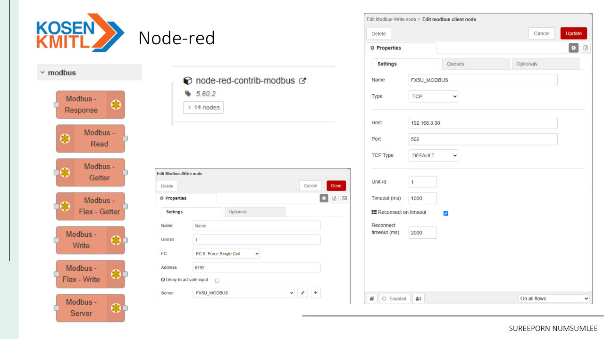
W15 · SLMP
node-red-contrib-mcprotocol
192.168.3.36 : 9000, frame 3E
Address by device name (M100)
W16 · Modbus TCP
node-red-contrib-modbus
192.168.3.30 : 502, Unit-Id 1
Address by number + FC (8192, FC5)
Assignment: smart production line (Modbus TCP)
The FX5U controls the machine sequence. Node-RED is the supervisory monitoring and control system.
Station 1 — detection & conveyor
Detect product → start conveyor when ready → transfer → stop at filling position.
Station 2 — filling / processing
Detect product → stop conveyor → fill according to the selected recipe → restart conveyor.
Station 3 — inspection & sorting
Simulated quality sensor → count Good → reject mechanism for defects → count Rejected.
Dashboard
Control (START/STOP/RESET, AUTO/MANUAL, station enable) · process (speed, current, temperature, cycle time, state) · production (target, total, good, reject, reject rate, achievement) · alarms & Modbus status.
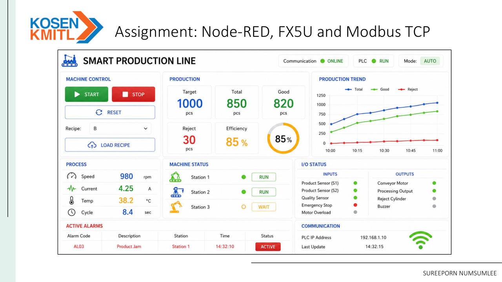
Assessed on: Modbus function codes & data mapping, PLC sequence & interlock, Node-RED functions & data processing, recipe management, alarm & fault handling, dashboard & production analysis, documentation & demonstration.